Nadie que conozca las políticas y los problemas que aquejan al sector pesquero puede mostrarse sorprendido de la actitud marroquí.

Pero el asombro es inevitable cuando se observa la pasividad de los gobiernos españoles ante la necesidad de reducir unas flotas de pesca sobredimensionadas , con exceso de potencia , exceso de años y condiciones de seguridad bajo mínimos.
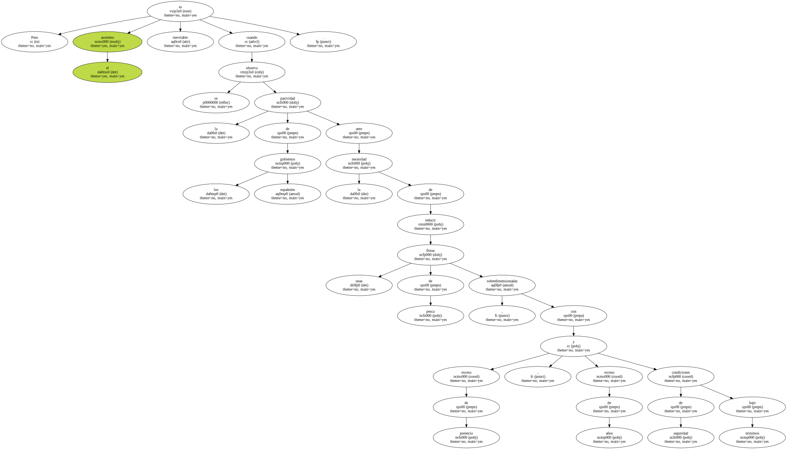Rasgarse ahora las vestiduras por la firmeza negociadora de nuestro vecino del sur , dejando caer en la opinión pública una cifra de afectados claramente hinchada , al objeto de responsabilizar a Marruecos del daño social , constituye una muestra de la peor política posible : culpar a los otros por lo que debimos haber hecho y no tuvimos la voluntad , ni la inteligencia , ni el coraje , de acometer.
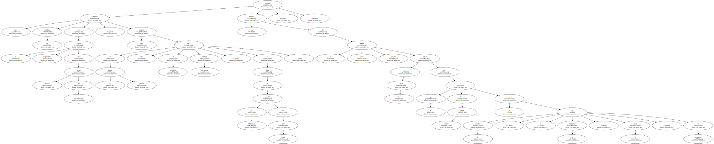La lógica de los pescadores es irrefutable.
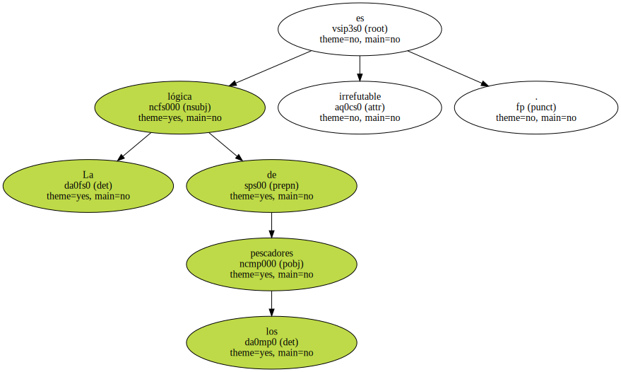El mar , para ellos , es una inmensidad inabarcable por la que merodea , ajeno al delirio macroeconómico , su escurridizo sustento.
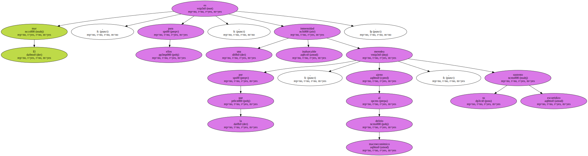¿ Cómo explicarles entonces que el mar tiene varios dueños y que a partir de la frontera de aquella ola el pescado ya no es tuyo ?.
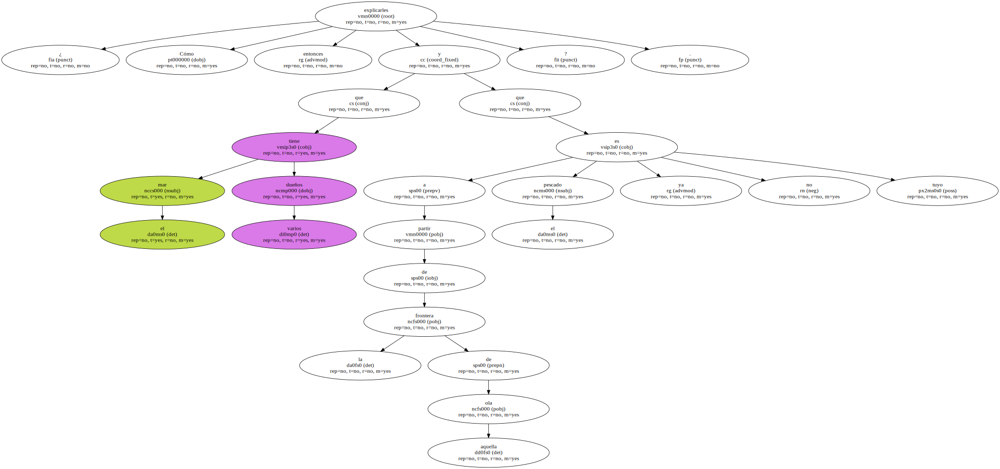¿ Cómo explicarles , sin recurrir al birlibirloque de los acuerdos que el hombre inventa , lo que la ley de la naturaleza ignora ?.
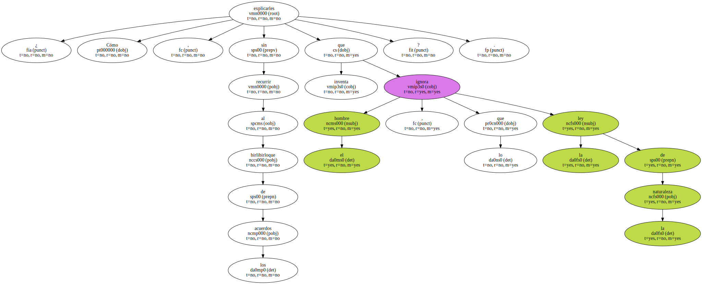¿ Qué sentido tiene combinar tan dura faena con tan torpe beneficio sin el consuelo romántico de un mar libre , abierto e inagotable ?.
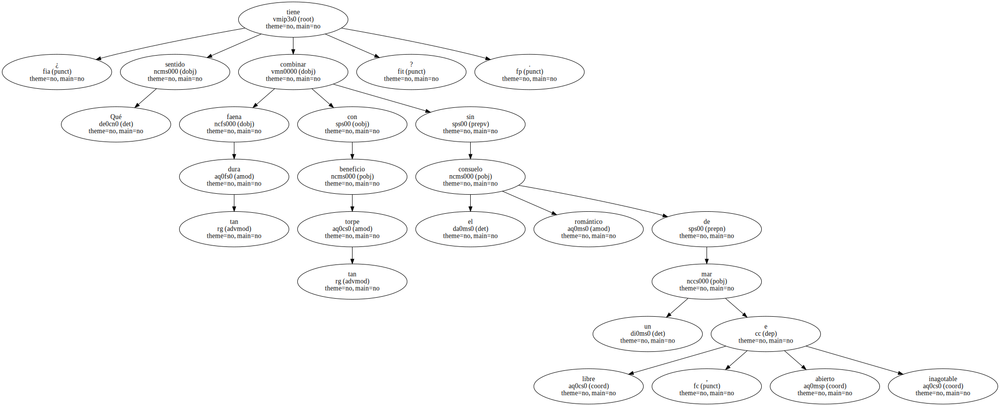Por desgracia , el mar ya no es libre , y su riqueza se agota o cae en manos de los depredadores : que más da que lleven traje y corbata o chilaba y turbante.
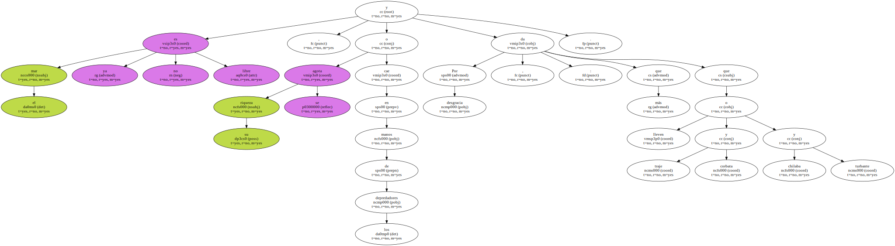Así lo ven los pescadores , y sus argumentos , romos en jurídica y política , no presentan fisuras morales.
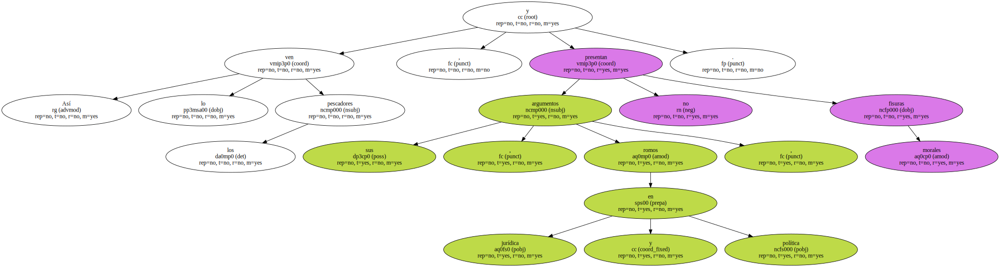Ningún acuerdo es bueno si quita el pan de la mesa.
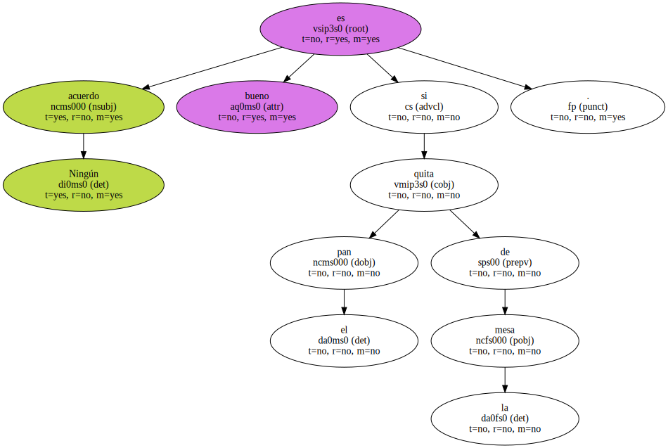Marruecos debería dejarnos faenar en sus aguas y España debería dejar a los marroquís trabajar en paz en nuestros campos.
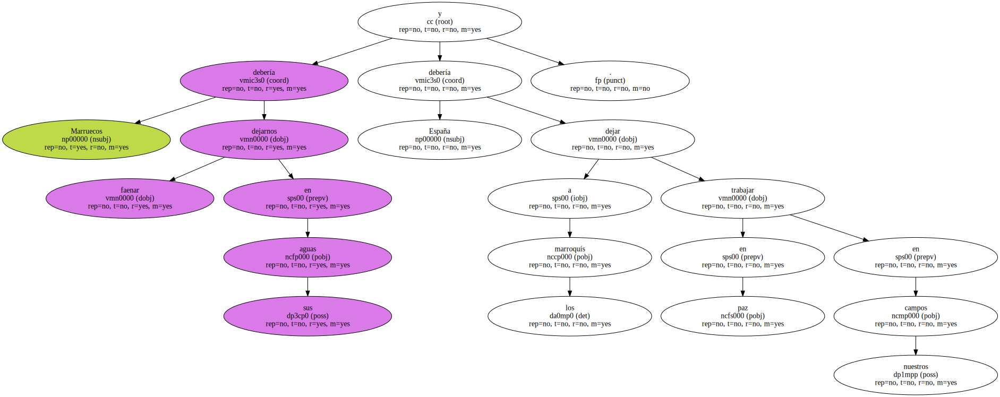Pero nada de esto pasará hasta que comprendamos que nuestras redes - - telefónicas , informáticas , narcóticas - - son sólo derivaciones inciertas de aquellas que el hombre usaba para vivir cuando el mar era uno y daba para todos.
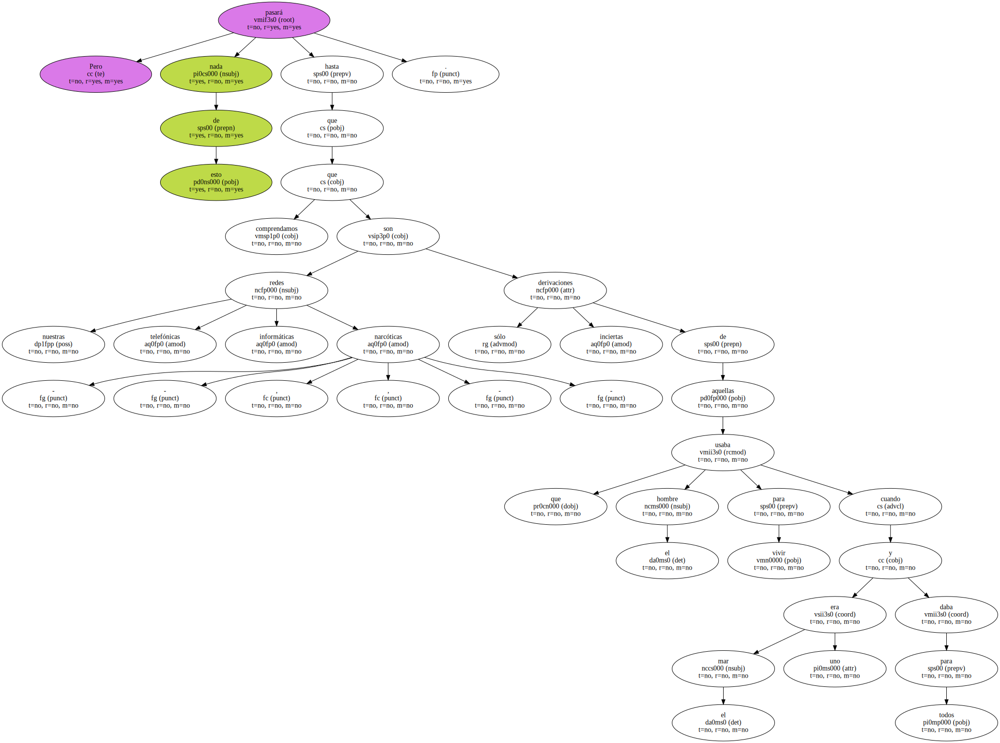EN CONTRA Limitar la pesca es vallar un sueño.
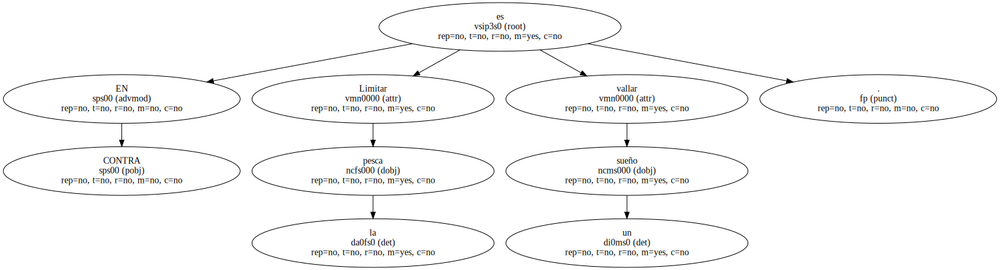Mucha gente quiere seguir viviendo como cuando los océanos no tenían amos y el fruto de la mar era infinito.
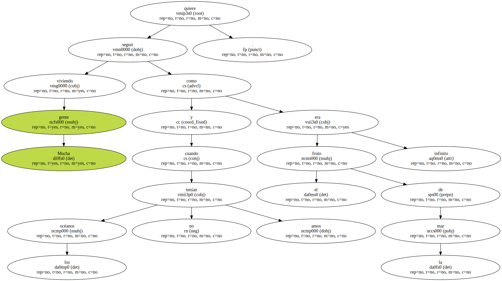